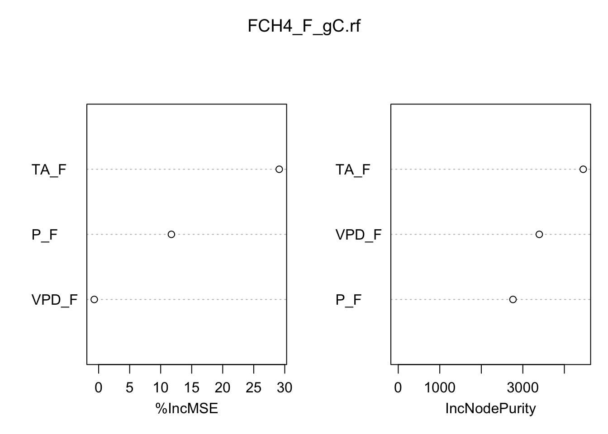

install.packages("randomForest")
install.packages("tidyverse")
install.packages("GGally")Introduction to Machine Learning with RandomForest
Install Packages:
Load Libraries:
library(randomForest)
library(tidyverse)
library(GGally)Boosted regression trees (BRT) represent a versatile machine learning technique applicable to both classification and regression tasks. This approach facilitates the assessment of the relative significance of numerous variables associated with a target response variable. In this workshop, our focus will be on utilizing BRT to develop a model for monthly methane fluxes originating from natural ecosystems. We’ll leverage climate and moisture conditions within these ecosystems to enhance predictive accuracy and understanding.
Read in the data:
load('data/RANDOMFOREST_DATASET.RDATA' )Our ultimate interest is in predicting monthly methane fluxes using both dynamic and static attribute of ecosystems. Before we start modeling with the data, it is a good practice to first visualize the variables. The ggpairs() function from the GGally package is a useful tool that visualizes the distribution and correlation between variables:
ggpairs(fluxnet, columns = c(3:7, 12:13))Next we need to divide the data into testing (20%) and training (80%) sets in a reproducible way:
set.seed(111) # set the randomnumber generator
#create ID column
fluxnet$id <- 1:nrow(fluxnet)
#use 80% of dataset as training set and 30% as test set
train <- fluxnet %>% dplyr::sample_frac(0.80)
test <- dplyr::anti_join(fluxnet, train, by = 'id')We will use the randomForest() function to predict monthly natural methane efflux using several variables in the dataset. A few other key statements to use in the randomForest() function are:
- keep.forest = T: This will save the random forest output, which will be helpful in summarizing the results.
- importance = TRUE: This will assess the importance of each of the predictors, essential output in random forests.
- mtry = 1: This tells the function to randomly sample one variable at each split in the random forest. For applications in regression, the default value is the number of predictor variables divided by three (and rounded down). In the modeling, several small samples of the entire data set are taken. Any observations that are not taken are called “out-of-bag” samples.
- ntree = 500: This tells the function to grow 500 trees. Generally, a larger number of trees will produce more stable estimates. However, increasing the number of trees needs to be done with consideration of time and memory issues when dealing with large data sets.
Our response variable in the random forests model is FCH4_F_gC and predictors are P_F, TA_F, VPD_F, IGBP, NDVI, and EVI. We will only explore a few of these variables below:
FCH4_F_gC.rf <- randomForest(FCH4_F_gC ~ P_F + TA_F + VPD_F ,
data = train,
keep.forest = T,
importance = TRUE,
mtry = 1,
ntree = 500,
keep.inbag=TRUE)
FCH4_F_gC.rf
Call:
randomForest(formula = FCH4_F_gC ~ P_F + TA_F + VPD_F, data = train, keep.forest = T, importance = TRUE, mtry = 1, ntree = 500, keep.inbag = TRUE)
Type of random forest: regression
Number of trees: 500
No. of variables tried at each split: 1
Mean of squared residuals: 4.887725
% Var explained: 22.83Note the mean of squared residuals and the percent variation explained (analogous to R-squared) provided in the output.
Visualize the out-of-bag error rates of the random forests models using the plot() function. In this application, although we specified 500 trees, the out-of-bag error generally stabilizes after 100 trees:
plot(FCH4_F_gC.rf)Some of the most helpful output in random forests is the importance of each of the predictor variables. The importance score is calculated by evaluating the regression tree with and without that variable. When evaluating the regression tree, the mean square error (MSE) will go up, down, or stay the same.
If the percent increase in MSE after removing the variable is large, it indicates an important variable. If the percent increase in MSE after removing the variable is small, it’s less important.
The importance() function prints the importance scores for each variable and the varImpPlot() function plots them:
importance(FCH4_F_gC.rf) %IncMSE IncNodePurity
P_F 11.7269452 2762.568
TA_F 29.1106456 4454.298
VPD_F -0.7084245 3396.256varImpPlot(FCH4_F_gC.rf)
Another aspect of model evaluation is comparing predictions. Although random forests models are often considered a “black box” method because their results are not easily interpreted, the predict() function provides predictions of total tree mass:
train$PRED.TPVPD <- predict(FCH4_F_gC.rf, train)
head(train$PRED.TPVPD) 1 2 3 4 5 6
0.3509667 0.4292789 0.3139104 0.4189123 1.1068833 2.2023186 Compare the observed (FCH4_F_gC) versus predicted (PRED.TPVPD):
ggplot() + geom_point( data = train, aes( x=FCH4_F_gC, y= PRED.TPVPD )) +
geom_smooth(method='lm')summary(lm(data=train, PRED.TPVPD~FCH4_F_gC))
Call:
lm(formula = PRED.TPVPD ~ FCH4_F_gC, data = train)
Residuals:
Min 1Q Median 3Q Max
-2.8501 -0.3881 -0.2159 0.2347 4.1151
Coefficients:
Estimate Std. Error t value Pr(>|t|)
(Intercept) 0.519090 0.015808 32.84 <2e-16 ***
FCH4_F_gC 0.639029 0.005478 116.65 <2e-16 ***
---
Signif. codes: 0 '***' 0.001 '**' 0.01 '*' 0.05 '.' 0.1 ' ' 1
Residual standard error: 0.6003 on 1894 degrees of freedom
Multiple R-squared: 0.8778, Adjusted R-squared: 0.8777
F-statistic: 1.361e+04 on 1 and 1894 DF, p-value: < 2.2e-16See how well the model performs on data that was not used to train the model:
test$PRED.TPVPD <- predict(FCH4_F_gC.rf, test)
ggplot() + geom_point( data = test, aes( x=FCH4_F_gC, y= PRED.TPVPD )) +
geom_smooth(method='lm')
summary(lm(data=test, PRED.TPVPD~FCH4_F_gC))
Call:
lm(formula = PRED.TPVPD ~ FCH4_F_gC, data = test)
Residuals:
Min 1Q Median 3Q Max
-2.6482 -0.8116 -0.4033 0.4567 5.9730
Coefficients:
Estimate Std. Error t value Pr(>|t|)
(Intercept) 1.06617 0.06553 16.27 <2e-16 ***
FCH4_F_gC 0.32516 0.02412 13.48 <2e-16 ***
---
Signif. codes: 0 '***' 0.001 '**' 0.01 '*' 0.05 '.' 0.1 ' ' 1
Residual standard error: 1.235 on 464 degrees of freedom
Multiple R-squared: 0.2814, Adjusted R-squared: 0.2799
F-statistic: 181.7 on 1 and 464 DF, p-value: < 2.2e-16Final Model Development:
The current model includes only climate variables from the tower. Use either a forward or backward selection method to develop your final model using your own data sets.
The forward selection approach starts with no variables and adds each new variable incrementally, testing for statistical significance, while the backward elimination method begins with a full model and then removes the least statistically significant variables one at a time.
Save your final model and datasets in a .Rdata object for next class where we will perform sensitivity analyses on the models.
save( FCH4_F_gC.rf , file="data/products/FinalModel.RDATA")